Memento-Skills：让 Agent 设计 Agent
论文针对冻结 LLM 部署后无法从自身经验中持续学习的问题，提出 Memento-Skills——一个'让 Agent 设计 Agent'的自进化系统。它把可复用技能（SKILL.md 声明式规范+辅助脚本+提示词的结构化 markdown 文件）外置为持久演化的技能记忆，通过 Read-Write Reflective Learning 闭环（路由读取技能→执行→反思写回）在不更新 LLM 参数的前提下实现持续学习；写回侧包含失败归因、技能重写、技能发现与自动单元测试门禁，读取侧用单步 offline RL（multi-positive InfoNCE）训练行为对齐的技能路由器，融合 BM25 与稠密检索。在 GAIA 与 HLE 上分别取得 26.2% 与 116.2% 的相对准确率提升，并发现技能迁移强依赖领域结构对齐。对团队而言，这是一套可直接借鉴的'技能库+反思进化+行为对齐检索'的 Agent 工程范式，代码与技能数据集均已开源。
冻结 LLM（参数在预训练后固定）遇到新任务时只能依赖参数内知识与上下文窗口，无法从部署经验中学习；而参数级持续更新需要大量数据与算力、成本高。论文要解决：如何在不更新 LLM 参数的前提下，让通用 Agent 通过自主构建、适配与改进任务专用 Agent（即技能的生成与进化），从经验中持续提升能力。
核心是'技能即记忆'：技能以结构化 markdown 文件存储（SKILL.md 声明式规范+辅助脚本+提示词），构成可增长的外部技能库，并以此将 Memento 2 的 SRDP/Reflected MDP 理论落地为技能级策略迭代（KL 正则软策略迭代收敛）。系统运行 Read-Write Reflective Learning 五步循环：Observe→Read→Act→Feedback→Write。Read 侧由技能路由器检索最相关技能（BM25 稀疏召回+稠密 embedding 检索+score-aware reciprocal rank fusion+可选 cross-encoder 重排）；路由器在约 8k 爬取技能（3k 种子合成查询、LLM judge 过滤、含 hard negative）上用单步 offline RL/多正例 InfoNCE 微调 Qwen3-Embedding-0.6B，使检索对齐'执行行为相似'而非表面语义相似。Write 侧记录 utility 成功率与 tip memory；失败时由 failure attribution selector 定位责任技能，skill rewriter 做文件级修补；utility 低于阈值则升级为技能发现（重构或新建技能）；所有突变经自动单元测试门禁验证、失败回滚。
GAIA 与 HLE 上整体准确率相对提升分别为 26.2% 与 116.2%（所有实验底层 LLM 为 Gemini-3.1-Flash）
GAIA：训练成功率从首轮 65.1% 升至第三轮 91.6%；测试集整体准确率 66.0%，比 Read-Write 消融基线（52.3%）高 13.7 个百分点
HLE：训练成功率从 R0 的 30.8% 升至 R3 的 54.5%（Humanities 达 66.7%、Biology 60.7%，Engineering 在 42.1% 提前饱和）；测试集整体准确率 38.7%，超过 Read-Write 基线（17.9%）的两倍
路由器：Recall@1 从 BM25 的 0.32、Qwen3 embedding 的 0.54 提升至 0.60（Recall@10 达 0.90）；端到端 route hit rate 从 0.29/0.53 提升至 0.58，judge success rate 从 0.50/0.79 提升至 0.80
技能库从 5 个原子技能增长：GAIA 学习后达 41 个技能，HLE 学习后达 235 个技能，并在 embedding 空间形成语义连贯的领域簇
相对已有工作的区别：(1) 已有自动技能学习方法要么产出纯文本指南（本质是 prompt 优化），要么过拟合单任务轨迹、迁移性有限；Memento-Skills 学习的是可执行、多工件（声明式规范+代码+提示词）的技能，并通过反思式读写管线持续精炼。(2) 将 Memento 2 的 SRDP/Reflected MDP 理论（KL 正则软策略迭代收敛保证）落地为以技能为记忆单元的具体可部署系统。(3) 提出行为对齐的对比路由器：用单步 offline RL（multi-positive InfoNCE）微调 embedding，使检索优化'执行行为相似性'而非词汇/语义相似性。(4) 让通用 Agent 端到端自主设计任务专用 Agent，而非依赖人工设计。
相关度级别：high
命中能力域：3.1 上下文工程与记忆 | 3.2 提示工程 | 3.3 Agent 架构与工具使用 | 3.5 评测与可靠使用
理由：直接命中 3.1 与 3.3：论文核心就是把技能库作为 Agent 的持久演化记忆（stateful prompts、检索管线、记忆增长与收敛分析），并给出完整的 Agent loop/harness 设计（路由-执行-反思-写回、失败归因、技能重写与发现、单元测试门禁），正是团队'上下文/记忆管理'与'Agent 架构与技能系统'的技术栈。次要命中 3.2（技能工件内嵌提示词，写回阶段直接重写提示词，属于提示词资产演化与自动优化）与 3.5（GAIA/HLE 基准评测与消融方法、零重训的成本效率、可靠性门禁）。对构建研发自动化 Agent 的团队而言，这是一套可复用的工程范式与开源实现。
建议动作：深入精读并做内部分享
arXiv:2603.18743v1 [cs.AI] 2026年3月19日
我们提出 Memento-Skills，一个通用的、可持续学习的 LLM 智能体（Agent）系统，它扮演“设计 Agent 的 Agent”（agent-designing agent）的角色：通过经验自主地构建、适配并改进面向特定任务的 Agent。该系统构建于基于记忆的强化学习框架之上，并采用有状态提示（stateful prompts），其中可复用的技能（以结构化 markdown 文件形式存储）充当持久且不断演化的记忆。这些技能同时编码了行为与上下文，使 Agent 能够在多次交互之间传承知识。
与以往依赖人工设计 Agent 的方法不同，Memento-Skills 使一个通用 Agent 能够针对新任务端到端地设计 Agent。通过迭代式的技能生成与精炼，系统逐步提升自身能力。在 General AI Assistants 基准测试（benchmark）和 Humanity's Last Exam 上的实验展示了持续的增益，总体准确率分别取得了 26.2% 和 116.2% 的相对提升。代码可在 https://github.com/Memento-Teams/Memento-Skills 获取。
从简单的基础技能（如 Web 搜索与终端操作）起步，该 Agent 借助 Memento 2 [17] 中提出的读写反思学习（Read-Write Reflective Learning）机制不断改进。在读阶段，一个行为可训练的技能路由器（skill router）依据当前的有状态提示选择最相关的技能；在写阶段，Agent 根据新经验更新并扩展其技能库。这种闭环设计使系统能够在不更新 LLM 参数的情况下实现持续学习，因为所有适配均通过外化技能与提示的演化来完成。
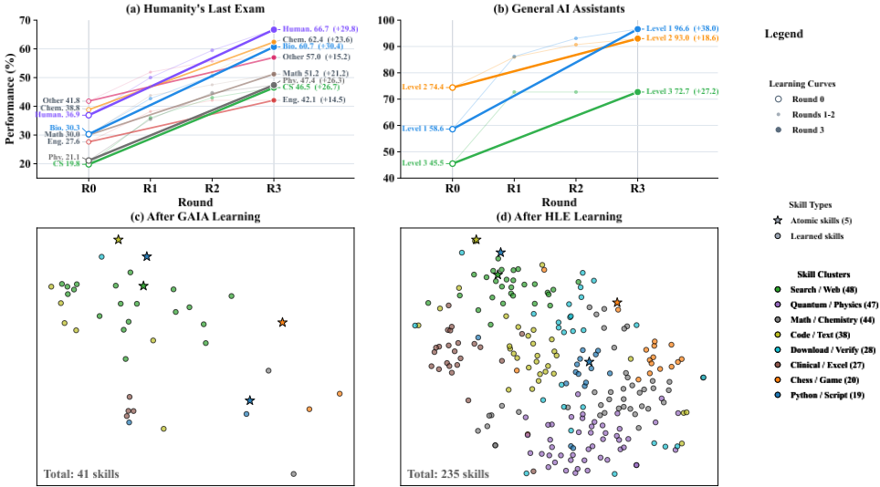
1
a 终身教职理论研究者。
b 计算机科学（CS）博士二年级学生。
c 资深机器学习（ML）工程师，拥有 12 年生产环境经验。
现代机器学习的本质是从经验中学习 [14, 16]。在这场演进的最前沿，大语言模型（Large Language Models, LLMs）从根本上重塑了学习范式，通过少样本学习（few-shot learning）[3]、监督微调（supervised fine-tuning）[18] 和后训练（post-training）[5]，在多样化场景中展现出卓越性能。然而，尽管前景可期，要实现实用价值通常仍需通过反向传播（backpropagation）[13] 进行参数优化，而这又需要海量的数据与计算资源。在实践中，持续参数更新的成本与复杂性意味着大多数 LLM Agent 都以冻结模型的形式部署 [20]：其参数 θ 在预训练之后保持固定（图 2）。当这样的 Agent 遇到新任务时，它只能依靠编码在 θ 中的知识，以及能够容纳于其上下文窗口中的内容。
graduation-cap J：这是关键前提。如果 θ 是固定的，那么所有适应都必须来自输入——提示、上下文，或者在我们的情形中，记忆。其余一切都不过是代价高昂的梯度下降cosplay罢了。
1 这是共享赛道，呈现的是研究赛道与从业者赛道共有的内容。
2
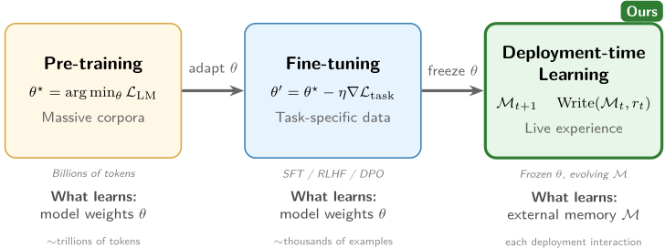
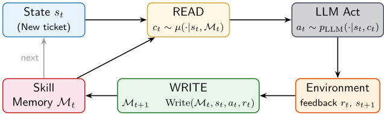
这造成了一个根本性的局限：Agent 是无状态的，无法从自身的部署经验中学习。有状态反思决策过程（Stateful Reflective Decision Process, SRDP）[17] 通过为 Agent 增加一个随时间增长的情景记忆（episodic memory）M t 来解决这一问题（图 3）：
其中，p LLM 表示 LLM 决策内核，s 为当前状态，c 表示从情景记忆 M t 中检索到的一个案例，µ 为检索策略。
fire H：等等——所以 LLM 本身没有改变，但策略却因为记忆的改变而改变了？这就像……在游戏里不升级角色却能提升等级。你只是拿到了更好的装备。
server S：我更愿意把它看作一个能让你变得更聪明的缓存。而资深工程师基本上就是这么回事——不过是拥有更好缓存的初级工程师罢了。
3
定义 1.1（技能记忆，Skill Memory）。技能记忆 M t = { c i } N t i =1 是一个有限且持续增长的可复用技能工件集合。与记录原始转移的传统情景记忆不同，每个 c i 封装了声明式规范、提示以及可执行代码。所有有限技能记忆构成的空间记为 M 。
定义 1.2（SRDP）。D SRDP = ⟨S , A , P , R, γ, M , p LLM ⟩，在标准马尔可夫决策过程（MDP）的基础上扩展了情景记忆 M 与 LLM 决策核 p LLM ( a | s, c ) 。
graduation-cap J：关键的洞见在于：通过将状态扩展为 x t := ( s t , M t ) ，我们重新获得了马尔可夫性。旧的一切又成了新事物——我在 2003 年的一篇研讨会论文中就说过这一点。
Reflected MDP 将其重新表述为 D ReMDP = ⟨X , C , P LLM , R LLM , γ ⟩，其转移核为：
在 Memento-Skills 中，Write( M , s, a, r ) 操作并非简单的追加。它封装了技能层面的反思式更新——执行失败归因并进行文件级重写，以修改 c 内部的提示或代码。通过将状态扩展为 x t := ( s t , M t )，即使技能库不断演化，系统仍保持马尔可夫性。
定理 1.3（收敛性，Memento 2 [17]，定理 8）。在有界奖励 |r| ≤ R max 且 γ < 1 的条件下，Reflected MDP 上的 KL 正则化软策略迭代收敛于最优检索策略 µ∗。
fire H：我能用 pip 安装收敛性保证吗？
git clone https://github.com/Memento-Teams/Memento-Skills.git cd Memento-Skills python -m venv .venv && source .venv/bin/activate pip install -e . memento agent
2 这是研究赛道（research track），介绍理论设定、收敛性证明以及 KL 正则化路由分析。
3 这是实践者赛道（practitioner track），介绍安装、API、检索流水线以及基准测试（benchmark）配方。
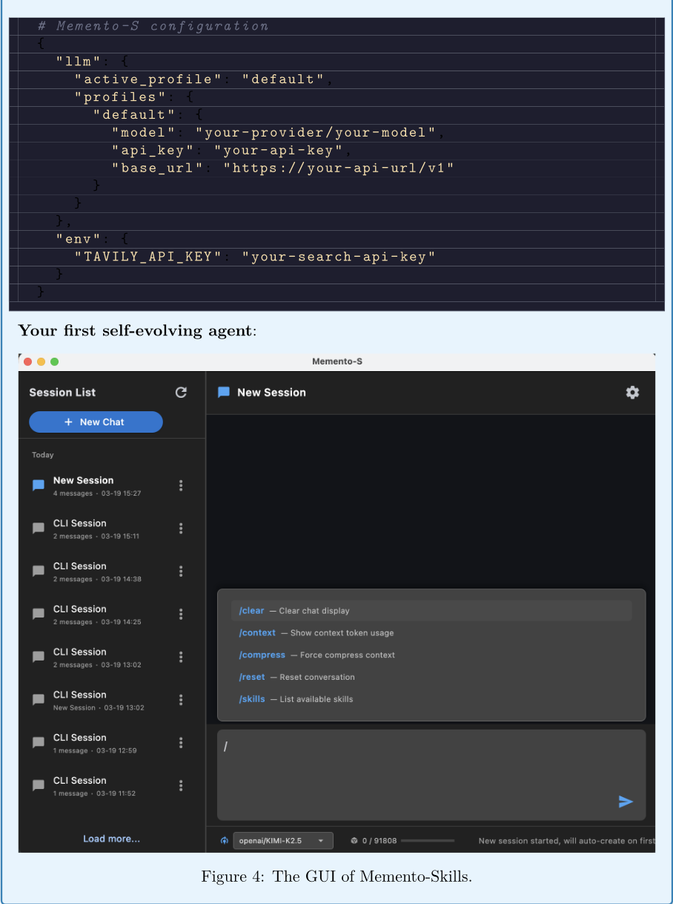
5
In the foundational theory of Memento 2 [17], Read-Write Reflective Learning is cast as an implicit form of policy iteration operating over raw episodic memory (past states, actions, and rewards). Memento-Skills bridges this theory to production by upgrading the memory unit from passive trajectory logs to an active skill library. Under this skill-centric paradigm, the two key operations take on concrete engineering forms:
optimised within these skill folders.
artefacts (code, prompts, and declarative specs).
The policy itself is materialised and
Reading (Policy Improvement):
·
Reading retrieves the most behaviourally relevant
skill rather than a static prompt or raw historical trace, the system achieves effective
skill to guide the frozen LLM. By conditioning the agent's action on an actively refined
policy improvement for the current task.
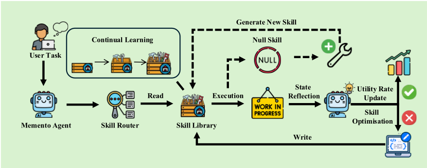
6
（一阵尴尬的沉默。H 最小化了那张图，打开文件资源管理器。屏幕上，一个孤零零的 Python 文件散发着不祥的气息：main.py——30,000 行。）
H：（不好意思地）那个……我确实有一个能跑的原型。全都在一个文件里。但它能跑起来！
S：（凑近，眯眼看屏幕，随即像被当头一击似的向后一缩）H。H。这是三万行代码放在一个文件里。
H：两万九千八百——
H：技能路由。每种技能类型都有自己的一条分支。
H：在 HLE 基准测试里，青蛙被提到过很多次……
H：（声音非常小）那是一次凌晨两点提交的代码。
S：（合上笔记本电脑，站起身，走向白板）好。接下来是这么办的。（画了一个标着"Agent Core"的方框，又向外辐射画出六个方框）我们要把这个三万行的怪物分解掉。要有模块。要有接口。要有关注点分离。青蛙处理程序是第一个要被干掉的东西。
H：可是它——
S：青蛙处理程序必须走。
S：（画到一半停了下来）……我真讨厌你刚刚把我的代码评审变成了你论文里的一个隐喻。
J：一切都是我在 2003 年发表的某项工作的特例。
7
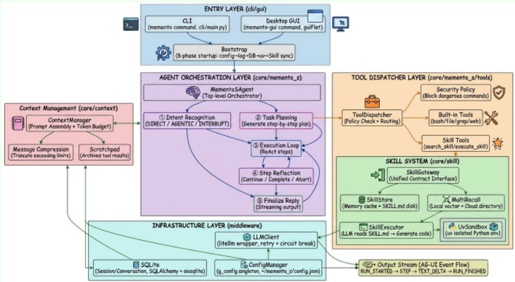
Memento-Skills is grounded in the theory of Read-Write Reflective Learning [17], which provides the theoretical foundation for read-write memory updates as policy iteration. Empirically Memento [22] and case-based reasoning LLM agents [6, 7] validate this principle across deep search, data science, and software engineering. As illustrated in Figure 5, the skill library serves as an external, writable memory, and the agent alternates between (i) reading skills to induce an execution policy for the current goal and (ii) writing updates back to the skill artefacts based on post-hoc reflection.
This self-evolving mechanism draws on a principle familiar from biological motor learning [9]: early in skill acquisition, performance depends on deliberate, high-level planning; with repeated practice, neural pathways consolidate and execution becomes increasingly automatic [2]. Analogously, a newly created skill in Memento-Skills may be brittle and narrowly scoped, but through iterative revision it is consolidated into a robust, reusable routine, finally forming muscle
This mirrors a policy-iteration view. Reading corresponds to policy improvement: the agent retrieves the most relevant skill via a router conditioned on the current query and the accumulated tip memory, then executes the skill's multi-step workflow to produce an answer. Writing closes the loop by combining policy evaluation and policy improvement at the skill level: the agent first evaluates by recording execution outcomes and diagnostic traces, then improves by using those traces to revise the skill artefacts that will govern future episodes. Crucially, the memory is not limited to episodic traces but consists of reusable skills, each containing a declarative specification ( SKILL.md ) together with helper scripts and prompts. Because the write operation rewrites the prompt or program that will be executed next, each write step directly improves the policy embodied in the skill.
memory for recurring task patterns. Existing approaches to automatic skill learning either produce text-only guides that amount to prompt optimisation [1, 15, 10] or overfit to single-task trajectories with limited transferability [8].
相比之下，Memento-Skills 学习可执行的多工件技能，并通过反思式读写学习流水线对其进行改进。具体而言，在一次尝试失败后，基于大语言模型（LLM）的失败归因选择器首先检查完整的执行轨迹和评判器的评判依据，以识别对错误负主要责任的单一技能，从而在技能层面进行信用分配。基于该诊断，技能重写器随后提出有针对性的文件级更新，为观察到的失败模式添加护栏或替代策略，同时保持技能的通用性。当某项技能的运行效用（即其经验成功率）降至阈值以下、表明原地修补已不足时，系统将升级为技能发现：要么以根本不同的方法重构现有技能文件夹，要么合成一个全新的技能，从而扩展技能库以覆盖任务空间中新的区域。为防止回归，所有变更均由自动单元测试门控加以保护——生成一个合成测试用例，通过更新后的技能执行，并由评判器进行评分 [21]。
读写循环是 Memento-Skills 的心跳。每次交互都遵循五个步骤：观察 → 读取 → 行动 → 反馈 → 写入。
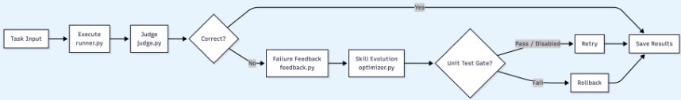
面向行为相似检索的离线强化学习（RL）路由器。我们发现，纯语义路由器（例如 BM25 [12] 或 Qwen-Embedding [19] 等嵌入路由器）不足以完成技能选择，因为它们主要捕捉的是用户目标与技能文本之间的语义相似性，而非行为相似性——即执行某个技能是否会产生期望的轨迹与结果。为了使路由与执行行为更好地对齐，我们在嵌入模型之上用单步离线 RL 训练路由器，使检索针对行为相似性进行优化，而非针对词汇或语义上的接近性。
技能数据库与合成查询生成。为了训练行为相似检索模型，我们首先爬取了一个包含约 8k 个技能的本地技能数据库，并随机采样约 3k 个技能作为种子数据，用于合成真实的用户路由目标。为了使合成目标与 agent 的逻辑流对齐，我们仅使用技能名称和描述来生成查询（不访问完整的技能文件），然后应用一个会读取完整技能文件的基于大语言模型（LLM）的评判器（judge）[21] 来过滤并验证合成查询的质量。由此得到高质量的配对数据，包括正例查询（应当选中目标技能）和难负例（领域与术语相同，但目标技能并非正确的工具）。我们在附录 C 中给出了用于查询合成的完整提示词。
路由器分数与多正例 InfoNCE。设 enc θ ( · ) 将技能文档 d 和路由目标 q 映射到 R m 中的嵌入：
在一个包含 B 个技能 { d i } 的小批量（minibatch）中，每个 d i 都有正例 Q + i 和难负例 Q - i 。使用批内所有查询
我们最小化多正例 InfoNCE 损失（温度 τ ）：
11
单步离线 Q 学习视角。将路由建模为单步马尔可夫决策过程（MDP）：状态 q ，动作 d ，奖励 r ( q, d ) 表示 d 是否为正确的技能。在时域为 1 时，
我们将学到的分数解释为一个软 Q 函数，Q θ ( q, d ) ∝ s ( d, q )，从而得到 Boltzmann 路由策略
该策略等价地是一个 KL 正则化目标（均匀先验 π 0 ）的最大化者：
fire H: 因此，较小的 τ 意味着“我相当确定——就选这个”，而较大的 τ 意味着“不着急——把概率质量分散开，更广泛地看一看”。
为什么 InfoNCE 与单步“策略拟合”相匹配。InfoNCE 在与 π θ 所用的同一个 softmax 归一化因子下具有“推高正例、压低竞争者”的形式。因此，最小化 L 就是（通过批内归一化近似实现的）最大似然训练，它使 π θ 在被记录的带奖励样本对（正例）上放置高概率质量，同时抑制难负例——即针对路由的单步离线策略改进。
server S：这是核心检索类。每一行都对应一个公式。我在注释里添加了参考文献，这样 H 就不会再问“可是为什么？”了。
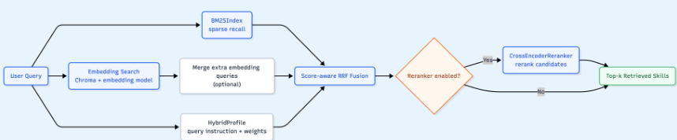
技能来源过滤与去重。我们首先从公开的 GitHub 仓库中收集候选技能，并将其统一整理为一个 JSONL 目录。为了只保留成熟且被广泛采用的技能，我们保留 stars > 500 的条目，并丢弃其余条目。随后，我们对描述中的空白字符进行规范化，计算每条规范化描述的 SHA-256 哈希值，并按哈希值去重，以移除重复或近似重复的技能。当多行共享同一哈希值时，我们依据一个确定性的评分规则保留单一代表条目：优先选择 stars 更高者，其次选择 updatedAt 更新者，再次选择 id 字典序更大者。我们可选地执行第二轮名称级别的去重，并采用相同的平局裁决规则。由此得到的精选目录被用作路由器训练数据生成的基础技能全集。我们在 https://skills.memento.run/market/ 公开开源了该数据集。
12
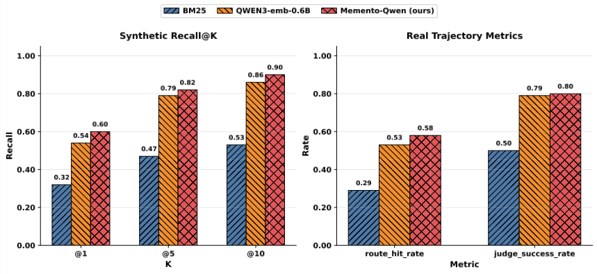
实验设置。我们从两个互补的角度评估技能路由器的性能：(i) 合成查询上的离线检索质量，以及 (ii) 真实执行轨迹上的端到端有效性。我们使用 Qwen3-Embedding-0.6B a 作为嵌入模型。
结果。我们报告在 140 条合成路由查询上的 Recall@K，其中若真实（ground-truth）技能出现在前 K 个候选中，则该查询记为一次命中。如图 9（左）所示，Memento-Qwen 在所有 K 值下均持续优于 BM25 和 Qwen3 嵌入基线。最显著的是，Recall@1 从 0.32（BM25）和 0.54（Qwen3）提升至 0.60，相比最强的语义基线取得了 10% 的相对增益。到 K=10 时，差距扩大至 0.90，这表明行为对齐训练不仅使 top-1 选择更加精准，还能让候选列表中包含更多相关的备选项。
为了检验离线检索的增益能否转化为真实执行上的改进，我们测量了两个端到端指标：路由命中率（route hit rate，即路由器的 top-1 选择是否是适合该任务的技能）和评判成功率（judge success rate，即完整轨迹是否真正解决了该任务）。图 9（右）显示，Memento-Qwen 将路由命中率从 0.29（BM25）和 0.53（Qwen3）提升至 0.58，将评判成功率从 0.50 和 0.79 提升至 0.80。相对于 BM25 的提升幅度大得不成比例，这证实了词法匹配是行为效用的一个很差的代理指标：许多技能共享相同的领域术语，却需要根本不同的执行策略。与此同时，相对于 Qwen3 的较小但一致的增益表明，即使是稠密语义嵌入也未能充分表征与执行相关的特征，而单步强化学习（RL）微调能够有效地将行为信号注入嵌入空间。
a https://huggingface.co/Qwen/Qwen3-Embedding-0.6B
13
14
实验设置。为了验证 Memento-Skills 的渐进式能力扩展与技能学习熟练度，我们在两个具有代表性的基准测试（benchmark）上评估我们的系统：General AI Assistants（GAIA）[11] 和 Humanity's Last Exam（HLE）[4]。这些数据集与我们的目标天然契合，即测试 Agent 在多样化推理任务中创建、改进和复用技能的能力。
Humanity's Last Exam（HLE）。HLE [4] 由人类专家开发，旨在评估广泛领域推理能力的极限，包含涵盖 8 个不同学科（如数学、人文学科和自然科学）的 2,500 道题目。在实验中，我们从这些类别中均匀抽取一个题目子集，最终得到 788 个训练样本和 342 个测试样本。这种结构使我们能够评估 Memento-Skills 在同一学科领域内的不同题目之间利用和迁移已习得技能的有效程度。
General AI Assistants（GAIA）。GAIA [11] 由非平凡的真实世界问题组成，这些问题具有明确无歧义的答案，需要综合运用多步推理、多模态处理、网页浏览以及通用工具调用。该环境为我们的技能学习场景提供了理想的测试平台，要求 Agent 动态地综合并应用不同的技能来解决各类问题。我们从 GAIA 验证集中选取了 165 道题目，将其划分为 100 个训练样本和 65 个测试样本。
基线。为了分离出自进化机制的贡献，我们将 Memento-Skills（完整系统）与一种 Read-Write 消融版本进行对比：后者保留了相同的读写式反思学习循环——技能检索、大语言模型（LLM）执行和反馈收集——但禁用了所有技能层面的优化，即不进行失败归因、不进行技能重写，也不进行技能发现。本文的所有实验均使用 Gemini-3.1-Flash 作为底层 LLM。
我们在 GAIA 基准测试上对 Memento-Skills 进行评估，每个问题最多进行三次反思式重试。如图 10 所示，自进化机制通过迭代交互不断精炼技能库：整体训练成功率从首次尝试时的 65.1% 攀升至第三轮的 91.6%。在未见过的测试集上，完整的 Memento-Skills 系统取得了 66.0% 的整体准确率，而 Read-Write 消融版本为 52.3%，这证实了技能优化流程在仅靠检索与执行所能达到的水平之上，额外贡献了 13.7 个百分点的提升。
GAIA 上有限的跨任务迁移。训练峰值与测试集准确率之间的差距揭示了该基准测试的一个重要结构特性：GAIA 的问题高度多样，所需推理模式之间几乎没有重叠。一项案例研究证实，训练期间优化出的大多数技能在测试期间从未被触发，因为不存在足够相似的测试问题。这一结果表明，技能迁移依赖于领域对齐；我们将在下文直接在 HLE 上检验这一假设——在 HLE 中，结构化的学科类别为技能复用提供了天然机会。
15
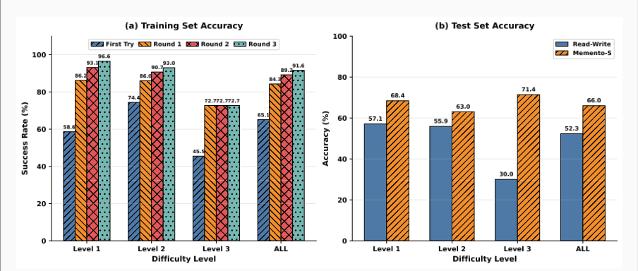
图 11 报告了 HLE 上四个训练轮次（R0-R3）以及最终测试集评估中各类别的准确率。在训练期间，总体成功率从 30.8%（R0）稳步上升至 54.5%（R3），且每个学科类别均呈现出持续的提升。人文学科（Humanities）与生物学（Biology）受益最大，到 R3 时分别达到 66.7% 和 60.7%，而工程学（Engineering）则在 42.1% 处较早饱和，这表明某些领域仅靠技能级抽象难以覆盖。
在测试集上，Memento-Skills 的总体成绩达到 38.7%，是 Read-Write 基线（17.9%）的两倍以上。与 GAIA 不同，HLE 结构化的学科分类体系使大量技能迁移成为可能：在某一生物学训练问题上精炼出的技能，经常被复用于测试集中未见过的生物学问题。这证实了领域对齐的技能库是实现跨任务泛化的关键使能因素。
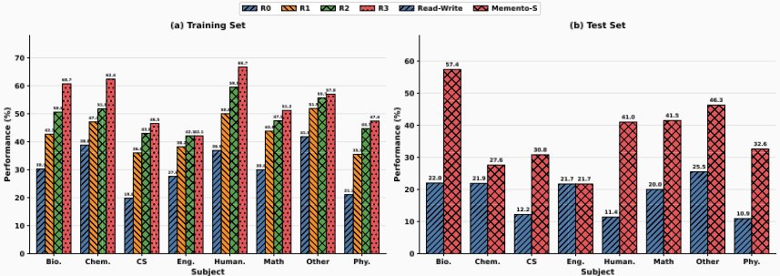
16
图 12 通过技能嵌入的 t-SNE 投影可视化了在每个基准测试上学习后的技能库。从相同的 5 个原子技能（红色星形）出发，GAIA 学习产生了一个包含 41 个技能的紧凑技能库，反映了该基准测试问题集多样但规模相对较小的特点。相比之下，HLE 学习将技能库扩展到 235 个技能，这些技能分布在宽广得多的嵌入空间中，映射出其 8 个学术学科的广度。值得注意的是，学习到的技能（蓝色圆点）聚集成语义上连贯的邻域；每个簇对应 Agent 通过反思性自我进化获得的一项领域特定能力。嵌入空间的这种渐进式致密化正是驱动下文 Bridge 中所分析的收敛现象的机制：随着技能库变得更加密集，记忆覆盖半径 r M 缩小，性能差距也随之收窄。
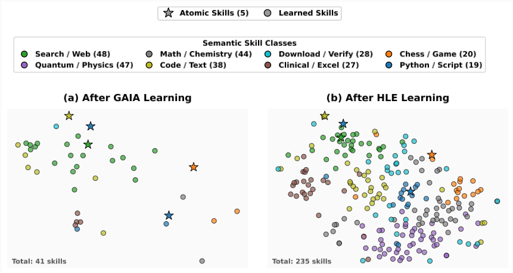
再看图 11：训练准确率从 30.8%（R0）攀升至 54.5%（R3），第一轮的增益最为陡峭，此后增量逐轮变小。每一轮中同时发生两件事：(i) 既有技能得到精炼：反思会修补失败模式，使每项技能覆盖更宽的查询邻域；以及 (ii) 新技能被加入技能库，缩小了已覆盖区域之间的空隙。这两种力量共同驱动了我们观察到的收益递减曲线：早期轮次带来大幅跃升，是因为技能库稀疏且技能粗糙；后期轮次增益较小，则是因为可达空间的大部分已被充分覆盖。图 12 使这一点变得具体：对比 GAIA 技能库（41 项技能）与 HLE 技能库（235 项技能）可以看到，额外的学习轮次不断填补既有簇之间的空隙，直到嵌入空间被密集覆盖；此时再添加更多技能只会带来递减的收益，因为邻近的技能已经存在。
这种收敛行为并非偶然；它正是 Memento 2 理论所预测的。渐近价值差距（Memento 2 中的推论 15）可分解为：
17
随着技能库的增长（更多 episode），记忆覆盖半径 r M 缩小，这同时降低了 ε LLM ( r M )（LLM 只需在更小的邻域上进行泛化）和 δ M（路由器更有可能找到行为相关的技能）。一旦这两项都足够小，后续轮次只会带来边际改进：系统已经收敛。
该界还揭示了缩小这一差距的三个独立旋钮：
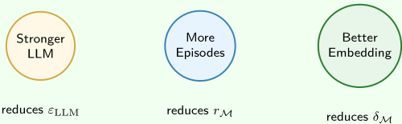
18
我们提出了 Memento-Skills，一个为 LLM 智能体弥合基于记忆的学习与基于技能的学习之间鸿沟的系统。其核心洞察在于将可执行技能视为外部记忆的单元，从而把 Stateful Reflective Decision Process 的理论保证转化为具体、可部署的产物。通过 Read-Write Reflective Learning 循环，智能体仅凭部署经验即可自主获取、精炼并复用这些技能，无需对底层 LLM 进行任何参数更新。一个通过单步离线强化学习（RL）训练、与行为对齐的对比式路由器，确保检索以执行成功而非表面相似性为优化目标。在 GAIA 和 HLE 上的实验证实，这种“技能即记忆”（skill-as-memory）的构建方式显著优于静态库消融版本，且当技能与结构化领域类别对齐时，跨任务迁移效果最强。更广泛而言，Memento-Skills 表明持续学习无需驻留于模型权重之中：一个不断增长、自我改进的技能库可以作为持久的非参数智能层，供任何冻结的 LLM 调用。
Huichi Zhou，伦敦大学学院 Siyuan Guo，吉林大学 Anjie Liu，香港科技大学（广州） Zhongwei Yu，香港科技大学（广州） Ziqin Gong，香港科技大学（广州） Bowen Zhao，香港科技大学（广州） Zhixun Chen，香港科技大学（广州） Menglong Zhang，香港科技大学（广州） Yihang Chen，伦敦大学学院
Jinsong Li，长三角AI实验室 Runyu Yang，长三角AI实验室 Qiangbin Liu，长三角AI实验室 Xinlei Yu，长三角AI实验室 Jianmin Zhou，长三角AI实验室 Na Wang，长三角AI实验室 Chunyang Sun，长三角AI实验室
Jun Wang，伦敦大学学院
本文以面向两类读者的交错轨道（interleaving tracks）形式组织。每一节以共享的对话（Dialogue）开篇，随后分叉为研究轨道（Research track）与实践者轨道（Practitioner track），最后在桥梁（Bridge）处汇合。请选择与您的目标相符的路径；若想获得完整图景，可将两条路径都读一遍。
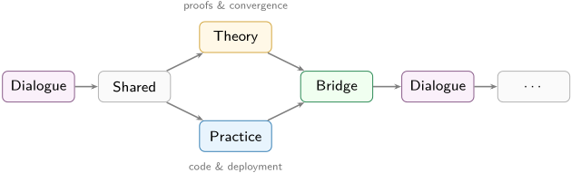
Formal SRDP setup, convergence proofs, and KL-regularised routing analysis. Follow the cream-shaded sections.
Dialogue → Shared → Theory → Bridge → . . .
安装、API 演练、检索流水线与基准测试（benchmark）方案。请跟随蓝色阴影标注的章节。
Dialogue → Shared → Practice → Bridge → . . .
Dialogue 以动机阐述为每一节开篇。Shared 呈现两条路径共有的内容。Bridge 将理论结果与工程选择联系起来。Epilogue 为整个叙事收尾。三个角色 J、H 和 S 以行内注释的形式贯穿全文。
| Character | Perspective & Personality | |
|---|---|---|
| <!-- rich cell --> | J | Tenured theorist. Writes proofs on napkins. Believes every- thing is a special case of something he published in 2003. ' But does it converge? ' |
| fire | H | Second-year CS PhD student. Runs 47 experiments simulta- neously and names them all after anime characters. Thinks every problem needs more GPUs. ' What if we just. . . scale it? ' |
| <!-- rich cell --> | S | Senior ML engineer, 12 years in production. Has been paged at 3am enough times to develop a Pavlovian response to Slack notifications. Trusts nothing without a unit test. ' Show me the latency numbers. ' |
| | Character | Perspective & Personality |
22
用于合成路由目标的提示词
目标技能：
- 名称：{skill_name}
- 描述：{description}
- 关键词：{keywords_block}
任务：为该目标技能生成合成路由目标（查询）。路由器状态仅为一个文本目标（routing_goal）。请编写贴近真实用户风格的目标。
需求：
- {need_pos} 条正向查询：应当选中目标技能。
- {need_neg} 条困难负向查询：与同一领域相关，但目标技能并无用处 / 并非最佳工具。
困难负向查询要求：
- 必须看起来合理可信，且贴近目标领域。
- 必须与该技能共享术语/主题。
- 对于该目标技能而言，必须是“相关但无用”的。
- 避免出现诸如“不要使用 <skill>”之类的明显线索。
风格要求：
- 不要直接提及技能名称。
- 每条查询都要具体、可操作且非平凡。
- 混合使用简洁与略带噪声的措辞。
- 仅使用英文（以匹配下游分词器）。
已接受的正向查询（避免重复）：{existing_pos_block}
已接受的负向查询（避免重复）：{existing_neg_block}
仅按以下模式返回 JSON：
{ "positive_queries": [ {"query": "...", "why_fit": "..."} ], "negative_queries": [ {"query": "...", "why_relevant": "...", "why_useless": "..."} ] }
S = 共享